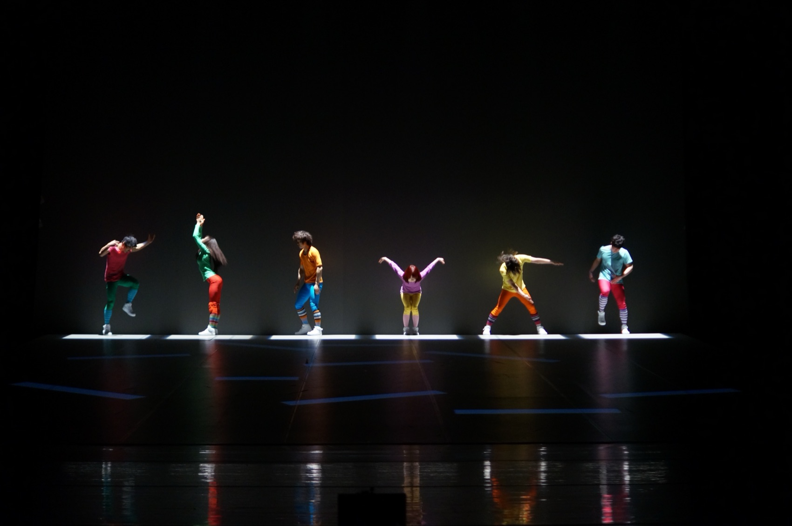
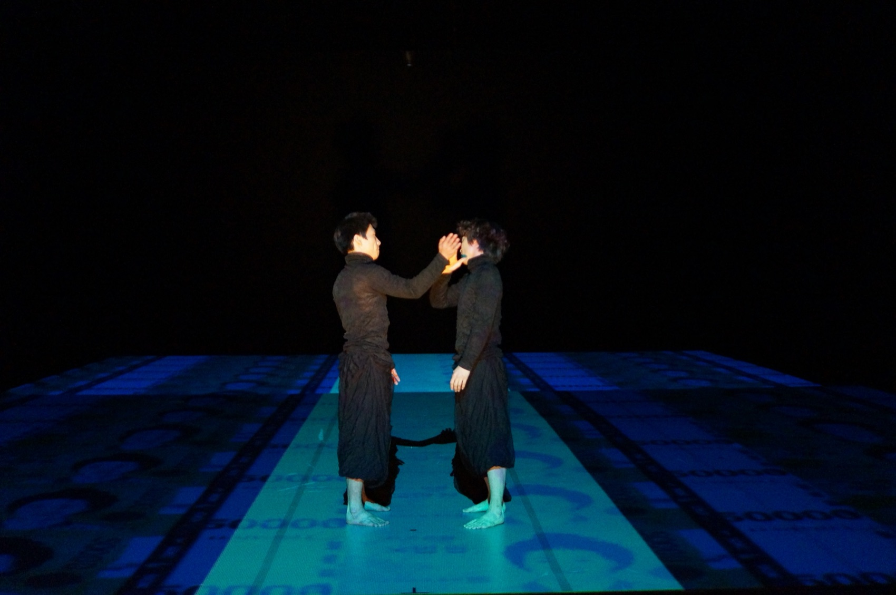
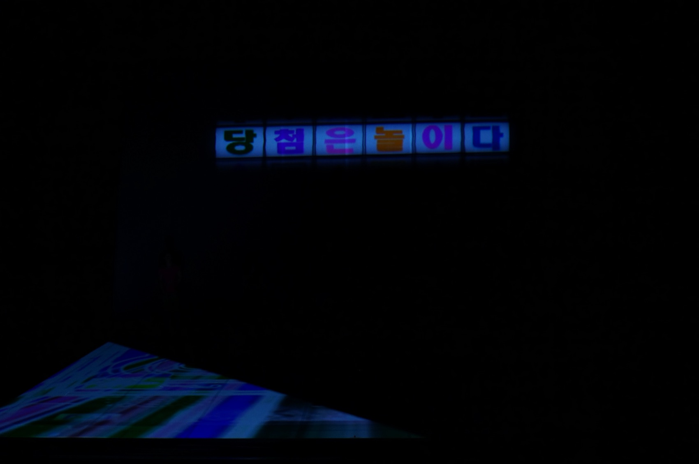
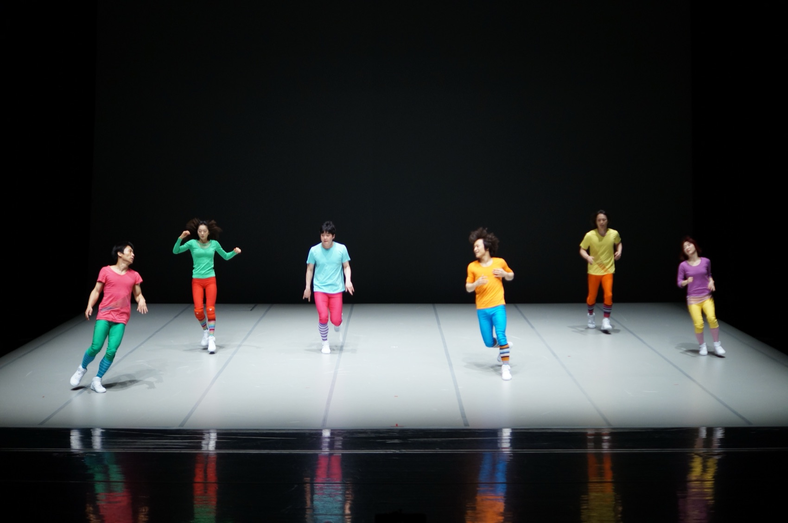
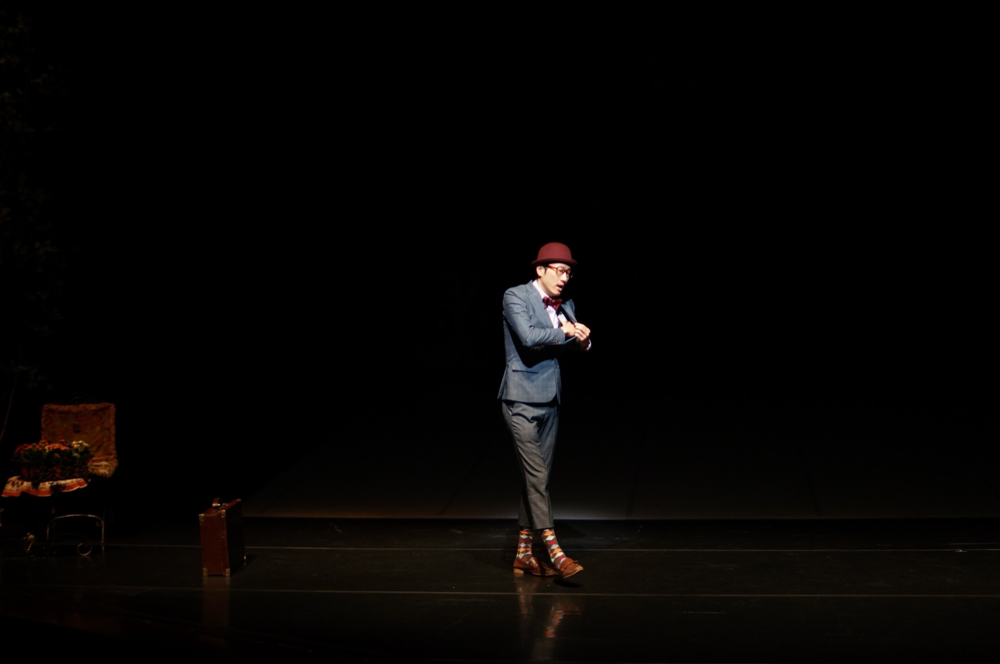
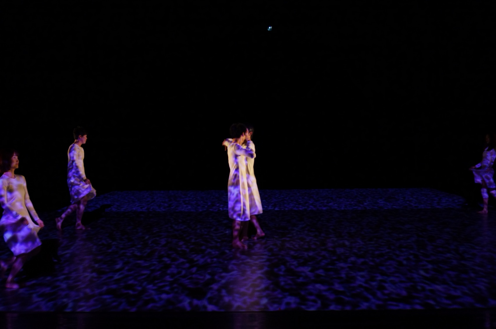
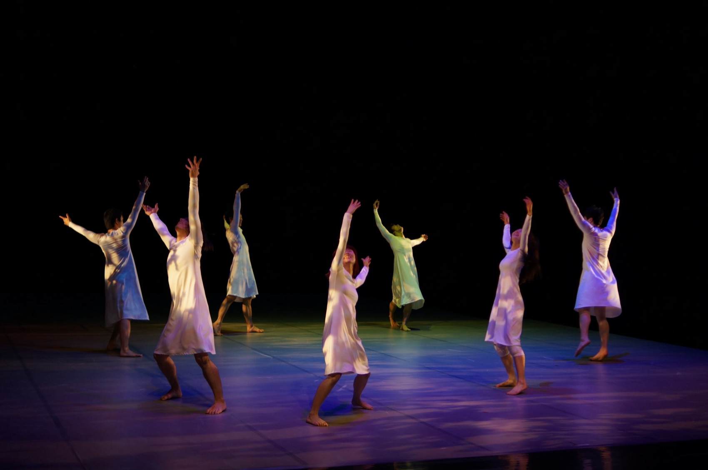
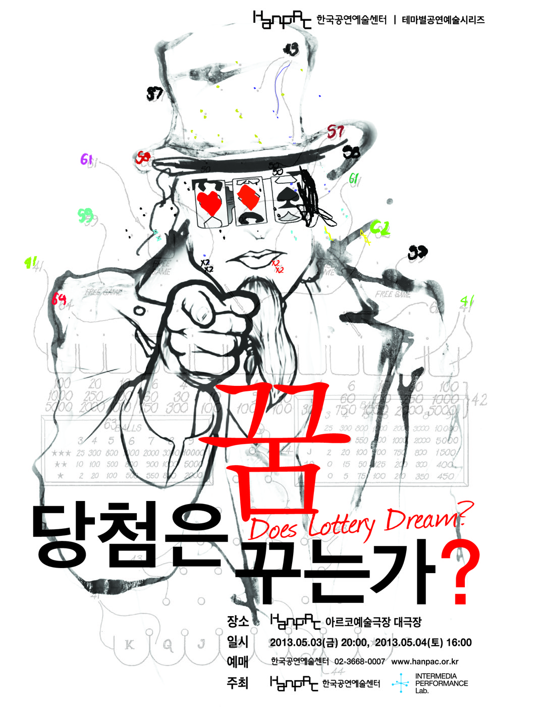

Performance — 2013
Dreaming of Winning
the Lottery?당첨은 꿈꾸는가? · 인터미디어 퍼포먼스 랩
복권, 결혼, 회춘 — 저마다의 ‘당첨’을 꿈꾸는 사람들의 이야기를 무용과 실시간 영상으로 엮은 옴니버스 미디어 퍼포먼스.
Lottery, marriage, second youth — an omnibus media performance weaving dance and live video around the ‘jackpots’ each of us dreams of.
이 작품은 포악한 자본주의 풍경을 드러내고자 하는 것이 아니고, 일확천금을 꿈꾸며 질주하는 인간의 욕망, 한낱 일장춘몽에 관한 이야기를 하는 것도 아닙니다. ‘당첨’이라는 소재를 통해서 다양한 사람들의 다양한 이야기를 유쾌하게 나누며 공감할 수 있다면, 그것이 관객들과 나눌 수 있는 힐링일 것입니다. 이 공연에는 당첨이 있고, 그 대박 맞는 당첨자가 되시기를 기원합니다. 당첨! 그것은 선택이고, 기회이자, 자신이 만들어 나가는 것 아니겠는가!
공연은 당첨에 관한 에피소드들을 옴니버스로 잇습니다. 다큐멘터리 형식의 인터뷰 영상이 에피소드와 브릿지 장면에 흐르고, 에피소드 장면은 무용으로 구성됩니다. 무대에는 사회자가 등장해 관객과 직접 소통하며 참여를 이끌고, 에피소드 사이의 이음새 역할을 합니다. 당첨의 의미는 주관적 해석에 따라 얼마든지 다르게 정의됩니다 — 그래서 공연은 결론을 짓지 않은 채, 마지막까지 관객에게 질문을 던집니다.
The work does not set out to expose the savage landscape of capitalism, nor to tell of human desire racing after a windfall — a mere spring dream. If, through the subject of ‘winning,’ we can share the many stories of many people with good humour and sympathy, that will be the healing this performance offers. There is a winning in this show — may you be its jackpot winner. Winning! Is it not a choice, a chance, a thing you make for yourself? Episodes on winning are strung together as an omnibus: documentary-style interview footage runs through the episodes and bridges, the episode scenes themselves are danced, and an MC speaks directly with the audience, drawing them in and stitching the episodes together. What winning means is left to each interpretation — so the performance never concludes, and keeps asking to the end.
- 연출
- Directed by
- 이승연 · 김제민 (공동연출)
- Seny Lee · Kim Jae Min (co-direction)
- 영상
- Video
- Kim Jae Min 김제민
- 주최
- Presented by
- 한국공연예술센터(HanPAC) · 인터미디어 퍼포먼스 랩
- HanPAC · Intermedia Performance Lab
- Dream 연작
- Dream cycle
- 태아는 꿈꾸는가?(2012) → 당첨은 꿈꾸는가?(2013) → 꿈꾸는 자들은 아름다운가?(3부)
- Does Fetus Dream? (2012) → Dreaming of Winning the Lottery? (2013) → Dreamers Are Beautiful? (part 3)
- 러닝타임
- Running time
- 60분
- 60 min
- 키워드
- Keywords
- omnibus · lottery · interactive MC · floor projection
창작 노트 — 정의 내리기 놀이
From the notes — a game of definitions
당첨은 무엇인가?
What is winning?
창작은 ‘당첨’을 정의하는 데서 시작됐습니다. 컨셉 노트에는 스물두 줄의 정의가 이어집니다 — 그중 어느 것도 정답이 아니고, 모두가 에피소드의 씨앗이 되었습니다. 공연 중에는 ‘당첨은 ooo다’라는 글귀들이 영상으로 무대를 날아다닙니다.
The making began with defining ‘winning.’ The concept note runs to twenty-two lines of definitions — none of them the answer, all of them seeds for episodes. During the show the phrases ‘winning is ___’ fly across the stage as video.
당첨은 놀이다. 게임이다. 당첨은 비극이다. 당첨은 사랑이다.
당첨은 한방이다. 대박이다. 인생역전이다. 잭팟이다. 로또다.
당첨은 종교다. 당첨은 신기루다. 잡을 수 없는 것이다. 상상이다. 허구다.
당첨은 남이다. 나랑 상관없는 것이다. 남의 일이다.
당첨은 확률이다. 너와 내가 만날 확률이다.
당첨은 도박이다. 중독이다. 마약이다.
당첨은 계획이다. 이상이다. 미친짓이다. 노력이다. 아첨이다.
당첨은 기다림이다.Winning is play. A game. Winning is tragedy. Winning is love.
Winning is one big hit. A jackpot. A life reversed. The lottery.
Winning is a religion. A mirage. The ungraspable. Imagination. Fiction.
Winning is other people. Nothing to do with me. Someone else’s business.
Winning is probability. The probability of you and me meeting.
Winning is gambling. Addiction. A drug.
Winning is a plan. An ideal. Madness. Effort. Flattery.
Winning is waiting.— 공연컨셉 노트, 2013. 3.
— Concept note, March 2013
구성 — 프롤로그, 네 개의 에피소드, 에필로그
Structure — a prologue, four episodes, an epilogue
“당첨은 ___다”
“Winning is ___”
에피소드마다 주제문이 텍스트로 무대에 떠오르고, 사회자가 진행하는 브릿지 장면이 사이를 잇는다. 인터뷰 영상 속 생각들이 무용의 상상 세계로 펼쳐진다.
Each episode’s thesis rises as on-stage text; MC-led bridge scenes join them, and the thoughts in the interview footage unfold into danced, imagined worlds.
00
프롤로그
Prologue
공연 전 로비에서 촬영한 관객 인터뷰가 영상 소스가 된다. 입장 번호표가 곧 당첨과 연결되는 장치도 구상되었다 — 극장에 들어서는 일 자체가 하나의 추첨이 된다.
Audience interviews filmed in the lobby become source footage; even the numbered admission tickets were conceived to tie into a draw — entering the theatre is itself a lottery.
01
당첨은 놀이다
Winning Is Play
매주 복권을 사는 사람 — 당첨의 기대가 아니라 상상하는 즐거움으로 하는 놀이. 되고 안 되고는 중요하지 않다. 게임 컨셉의 무용, 슬롯머신이 도는 영상, 사다리와 거미줄 이미지가 무용수들과 맞물린다.
Someone buys a ticket every week — a game played not in expectation but for the pleasure of imagining. Winning or not hardly matters. Game-styled dance meshes with spinning slot-machine video, ladder lines and spider-web images.
02
당첨은 한방이다
Winning Is One Big Hit
대박이다, 잭팟이다, 인생역전이다, 게임이다, 도박이다. 한방을 좇는 마음 밑바닥의 중독성 — 게임 중독, 경마, 카지노, 그리고 상대와 자신에 대한 승부욕. 돼지가면의 이미지가 겹쳐진다.
A jackpot, a reversal of fortune, a game, a gamble. Beneath the chase lies addiction — gaming, horses, casinos, the will to beat the other and oneself. The image of pig masks recurs.
03
당첨은 비극이다
Winning Is Tragedy
희극인 듯하지만 파멸의 길로 갈 수 있다. 한방을 맛본 사람은 끊을 수가 없다. 복권을 맞은 사람들은 자신의 살던 삶을 내던진다 — 심지어 인간관계도. 돈을 달라고 하기 때문에.
It looks like comedy but can run to ruin. One taste of the big hit and there is no stopping; winners throw away the lives they lived — even the people — because everyone starts asking for money.
04
당첨은 사랑이다
Winning Is Love
아들이 자동차를 긁었다. 그걸 본 아버지가 아들을 밀쳐내고, 아이는 다리를 다친다. 그런데 긁힌 자국에는 이렇게 적혀 있다 — ‘아빠 사랑해.’ 사람과 나눔의 당첨.
A boy scratches the family car; his father shoves him away and the boy hurts his leg. Then the father reads the scratch — ‘Dad, I love you.’ The winning of people, and of giving.
05
에필로그
Epilogue
사회자가 금돼지 저금통을 들고, 당첨에 대해 결론을 짓지 않은 채 관객들에게 질문을 던진다. 공연 전 찍은 관객 인터뷰 영상이 다시 흐른다 — 무대의 질문이 객석의 얼굴로 되돌아온다.
Holding a golden piggy bank, the MC puts the question to the audience — refusing to conclude. The pre-show interviews screen again: the stage’s question returns wearing the audience’s own faces.
김제민의 영상 설계 — 경사무대를 스크린으로
Kim Jae Min’s video design — the raked stage as screen
무대 바닥이 슬롯머신이 된다
The stage floor becomes a slot machine
아르코 대극장 무대 맨 뒤에 싸이클로라마 스크린을 내리고, 그 앞에 회전무대 너비의 경사무대(약 4도)를 세워 뒷무대에서 오케스트라 피트까지 기울어져 내려오게 했습니다. 영상 설계의 출발은 이 경사진 바닥 전체를 스크린으로 쓰는 것 — 전면투사 프로젝터 2대와 바닥투사 1대, Mac 2대, 그리고 키넥트 센서가 시스템을 이룹니다.
에피소드 1에서는 ‘당.첨.은. 놀.이.다’라는 글자가 하나씩 슬롯이 되어 슬롯머신으로 돌아가고, 무용수들이 업스테이지에서 퍼포밍하면 사다리 사선 이미지가 불규칙하게 나타나 점점 형태를 만들어 갑니다. 로또머신의 플라스틱 볼이 영상으로 쏟아지고, 무용수의 슬로우모션에 거미줄 이미지가 걸립니다. 바닥에는 지폐와 숫자가 흐르고, 무용수의 몸 위로 문양이 맵핑됩니다. 실시간 카메라로 배우가 인터뷰를 재연하는 장면도 설계되었습니다.
A cyclorama screen was lowered at the very back of the Arko main stage, and in front of it a raked platform the width of the revolve — about four degrees — sloped down from the upstage to the orchestra pit. The video design began from using this entire raked floor as a screen: two front-projection units, one floor projector, two Macs and a Kinect sensor made up the system. In Episode 1 the syllables of ‘win-ning-is-play’ became slot reels and spun; as the dancers performed upstage, slanted ladder lines appeared irregularly and gathered into form. Lottery-machine balls poured down in video, a spider’s web caught the dancers’ slow motion, banknotes and numbers streamed across the floor, and patterns were mapped onto moving bodies. A live-camera scene, in which an actor re-enacts an interview onstage, was designed as well.
- 시스템
- System
- 프로젝터 3대(전면 2·바닥 1) · Mac 2대 · Kinect 센서 · 쿼츠 컴포저
- 3 projectors (2 front, 1 floor) · 2 Macs · Kinect sensor · Quartz Composer
- 인터미디어 퍼포먼스 랩
- Intermedia Performance Lab
- 아날로그 공연예술과 실시간 인터랙션 기반 디지털 미디어아트의 융합으로 새로운 다원예술 장르를 만들어 가는 융복합 연구단체. ‘새로운 것 만들기’보다 ‘다르게 보기’를 지향한다.
- A convergence research group fusing analogue performing arts with real-time interactive media art into new interdisciplinary genres — aiming less at ‘making the new’ than at ‘seeing differently.’
공연 기록 — 아르코예술극장 대극장, 2013. 5.
Performance record — Arko Arts Theater Main Hall, May 2013






